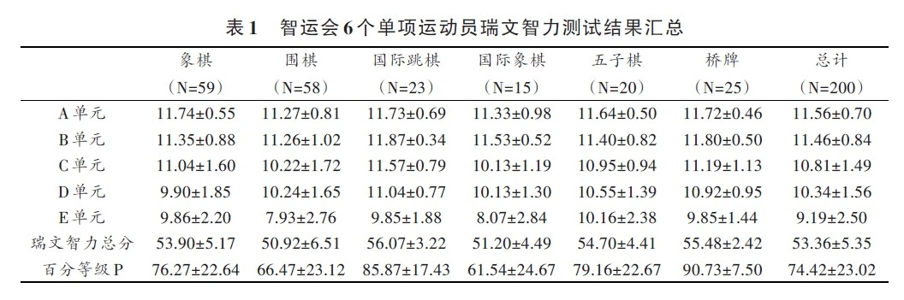

智力项目运动员瑞文智力测验结果特征分析
#1 智力项目运动员瑞文智力测验结果特征分析 作者：无尽 发表时间：2014-3-28 23:19:09
作者：黄志剑1，程序1，董伟2，李健3
（1.武汉体育学院，湖北武汉430079；2.上海市体育科学研究所，上海200438；3.武汉体育学院研究生部，湖北武汉430079）
摘要：对217名第2届全国智力运动会参赛运动员进行瑞文智力测试，结果表明：智力项目运动员的智力水平显著高于常人；不同智力项目运动员的瑞文智力结构间存在显著差异；高水平智力项目运动员在知觉辨别、抽象推理两类能力上显著优于中等水平运动员；不同性别运动员智力水平差异不显著。
关键词：智力运动会；智力项目运动员；瑞文测验；智力
中图分类号：G804.8 文献标识码：A 文章编号：1000-520X（2013）01-0090-05
基金：国家体育总局棋牌运动管理中心科研项目
摘录
研究对象和方法
从参加第2届全国智力运动会的运动员中随机选取217名进行测试，剔除无效问卷，最终有效问卷200份，有效回收率为92.2%。其中，象棋59人，围棋58人，国际跳棋23人，国际象棋15人，五子棋20人，桥牌25人，占所有参赛选手总数的11.7%。研究方法及工具采用由英国心理学家瑞文（J.C.Raven）于1938年编制的联合瑞文测验（CRT）标准型（SPM）进行问卷调查。测试共分5个子单元，每单元12道黑白图形匹配题目，共60道题。题目难度顺序为由易到难排列，每个单元的解题思路基本一致，而各单元之间是有差异的，所测的能力也有所不同，基本可分为5个维度：A单元主要测量知觉辨别力，图形比较、图形想象等；B单元主要测量类同比较能力；C 单元主要测量比较推理能力；D单元主要测量系列关系能力；E单元主要测量抽象推理能力。计分时对照标准答案，每答对1题记1分，先将每个单元分别计分，各单元满分为12分，然后将五个单元的分数相加，得到总分（原始分），满分为60分［1-2］。根据年龄查表依原始分得出百分等级及相对应智力得分数值（见下表）。

结论
最终通过计算得出，第2届智力运动会运动员的瑞文IQ智商平均得分为115.91，标准差为13.96，可见本研究参与者，即第2届智力运动会参赛选手的瑞文IQ智商水平较一般人群偏高。
1）智力运动员群体的智力水平显著高于一般水平。
2）不同智力项目运动员在瑞文智力测试5个单元上的得分均存在显著差异，即项目不同，相应智力结构可能不同。
3）高水平运动员在瑞文智力的知觉辨别和抽象推理能力方面显著优于中等水平运动员，不同性别智力运动员智力水平不存在显著差异。
总之，通过对第二届全国智力运动会参赛运动员智力水平的测查，研究者验证和拓展了关于智力运动员智力水平的认识，得出了一些在理论和实践中具有现实意义的结论，一定程度上填补了我国体育科研领域对智力运动项目研究的空白，也为今后在该领域内开展深入研究奠定了基础。
全文下载（PDF）
 智力项目运动员瑞文智力测验结果特征分析_黄志剑.part1.rar
智力项目运动员瑞文智力测验结果特征分析_黄志剑.part1.rar
智力项目运动员瑞文智力测验结果特征分析_黄志剑.part2.rar
智力项目运动员瑞文智力测验结果特征分析_黄志剑.part3.rar
智力项目运动员瑞文智力测验结果特征分析_黄志剑.part4.rar
［此帖子已被 无尽 在 2014-3-28 23:27:35 编辑过］
［ 失落刀 于 2014-3-29 17:12:58 时奖励此帖[金币加 100 威望加1］
［ 呆神同学于 2014-3-29 19:09:10 时花20金币送鲜花一朵］
［ 呆神同学于 2014-3-29 19:09:10 时花20金币送鲜花一朵］
［ 呆神同学于 2014-3-29 19:09:10 时花20金币送鲜花一朵］
［ 呆神同学于 2014-3-29 19:09:10 时花20金币送鲜花一朵］
［ 呆神同学于 2014-3-29 19:09:10 时花20金币送鲜花一朵］
［ 呆神同学于 2014-3-29 19:09:10 时花20金币送鲜花一朵］
［ 呆神同学于 2014-3-29 19:09:10 时花20金币送鲜花一朵］
［ 呆神同学于 2014-3-29 19:09:10 时花20金币送鲜花一朵］
［ 呆神同学于 2014-3-29 19:09:10 时花20金币送鲜花一朵］
［ 呆神同学于 2014-3-29 19:09:10 时花20金币送鲜花一朵］
［此帖子已被 无尽 在 2014-3-29 22:05:04 编辑过］
［ 伤情路同学于 2014-3-31 14:27:32 时花20金币送鲜花一朵］
［ 伤情路同学于 2014-3-31 14:27:32 时花20金币送鲜花一朵］
［ 伤情路同学于 2014-3-31 14:27:32 时花20金币送鲜花一朵］
#2 Re:智力项目运动员瑞文智力测验结果特征分析 作者：釣鱼岛岛主 发表时间：2014-3-28 23:38:28
瑞文不是放逐之刃吗#3 Re:智力项目运动员瑞文智力测验结果特征分析 作者：掌棋宣传员 发表时间：2014-3-29 10:22:51
我想知道五子棋是抽的哪20人....#4 Re:智力项目运动员瑞文智力测验结果特征分析 作者：厦门小天 发表时间：2014-3-29 11:12:08
好久没来了，一来就遇上这等猛文…#5 Re:智力项目运动员瑞文智力测验结果特征分析 作者：你就在我身边 发表时间：2014-3-29 14:27:57
是不是当时有些志愿者在蓝天宾馆找选手填写的那些材料？ 当时都没有仔细看过就扔包里了... 现在要找应该还能找到...#6 Re:智力项目运动员瑞文智力测验结果特征分析 作者：战神巴蒂 发表时间：2014-3-29 19:09:29
原来最聪明的人玩桥牌和国跳，最笨的玩围棋和国象。。。。。。#7 Re:智力项目运动员瑞文智力测验结果特征分析 作者：与郎共五 发表时间：2014-3-29 21:35:03
高手共同特征:刻苦，记忆力强，空间想像力强。#8 Re:智力项目运动员瑞文智力测验结果特征分析 作者：无尽 发表时间：2014-3-29 22:24:22
只知道清缘被测了，大家来揭晓
#9 Re:智力项目运动员瑞文智力测验结果特征分析 作者：尕孩 发表时间：2014-3-31 12:18:24
5L好猛。。#10 Re:智力项目运动员瑞文智力测验结果特征分析 作者：伤情路 发表时间：2014-3-31 14:28:04
 清缘拖我们后腿了没
清缘拖我们后腿了没
#11 Re:你就在我身边【==Re:智力项目运动员瑞文智力测验结果特征分析==】 作者：梧桐风 发表时间：2014-3-31 22:20:44
引用：对，就是这伙人，现在忘了有没有填过，反正志愿者当时说：就随便填填好了。。。
原文由 你就在我身边 发表于 2014-3-29 14:27:57 :
是不是当时有些志愿者在蓝天宾馆找选手填写的那些材料？ 当时都没有仔细看过就扔包里了... 现在要找应该还能找到...
#12 Re:梧桐风【==Re:你就在我身边【==Re:智力项目运动员瑞文智力测验结果特征分析==】==】 作者：你就在我身边 发表时间：2014-3-31 22:33:24
真是那次啊，你填了没~ 我是没填哈哈哈哈哈